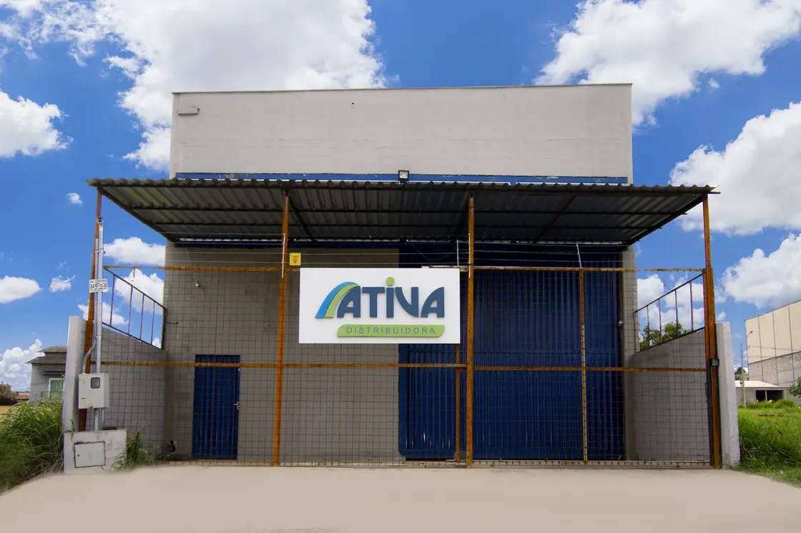
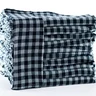
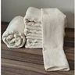
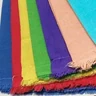
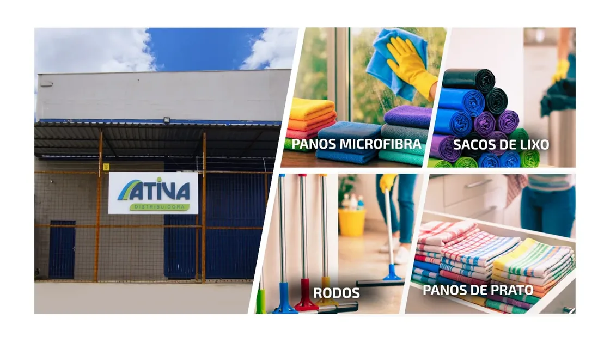

Panos de prato
24unidades por pacote
O pano de prato de algodão que o mercado revende e a cozinha profissional usa todo dia.
Fabricamos em Aparecida de Goiânia e vendemos por pacote fechado, para revenda, mercado, empresa de limpeza, terceirizadora e quem usa pano todo dia.
Precisa de poucas peças? Veja como comprar no depósito.

Nossa unidade Aparecida de Goiânia. Você compra na fonte.Vendemos em pacote fechado. Estes são os mínimos por item para pedido pelo WhatsApp.
O pano de prato de algodão que o mercado revende e a cozinha profissional usa todo dia.
Microfibra para limpeza geral e flanela para acabamento. Cada item tem o seu pacote.
Saco de algodão para limpeza pesada, o que mais sai para empresa de limpeza.
Rodo para completar o pedido de quem já leva pano.
Para quantidades menores que um pacote, veja compra em pequena quantidade, logo abaixo.
A proposta sai com o preço do seu ramo e da sua quantidade. Você confere a mensagem aqui e só então ela abre no WhatsApp.

Pano de prato
Pano de chão
Saco de algodãoO nosso foco é o pano têxtil. Flanela e sacaria vão no mesmo pedido, e o rodo completa.

Exemplo de estrutura (ilustrativo)
"Comprava pano no atacado e a margem não fechava. Passei a pegar direto da Ativa e a diferença de preço apareceu no meu caixa já no primeiro mês."
"O que pesa pra mim é não faltar. Peço hoje e chega rápido. E o pano aguenta o uso pesado, o cliente não volta reclamando."
"Comecei com um pacote de cada item para conhecer. Gostei da qualidade e fechei volume. Hoje é meu fornecedor fixo de pano de prato e microfibra."
Exemplo de estrutura (ilustrativo). Estas três falas são inventadas e saem da página antes da publicação.
Precisa de poucas peças? Você é bem-vindo no balcão do nosso depósito, e não precisa chamar no WhatsApp para isso.
Pedidos pelo WhatsApp seguem os pacotes mínimos. Abaixo disso, a compra é no balcão.
Quatro respostas e a proposta sai.
Pedir proposta para compra em volumePacote fechado por item · atendimento em horário comercial · retirada no depósito para poucas peças.